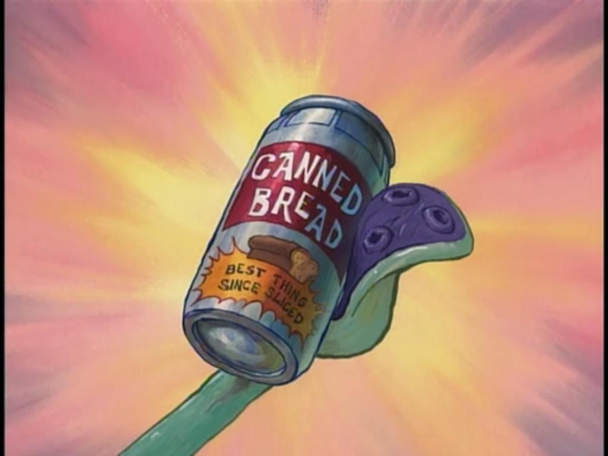

Long ago, in the foothills of Nepal, a fierce warrior monk was training to master the arts of meditation at the summit of a mountain. While he trained, an irradiated can of bread meat snuck up on him and fused itself with him. He is now endowed with all the powers of a bread, since the cells of the bread continue to mutate inside his body. He has used this power in the space war between two opposing factions of canned breads and is unmatched by any other person in the universe that has a bread related disorder.<br>

click to find the source of Canned Bread Man's Powers